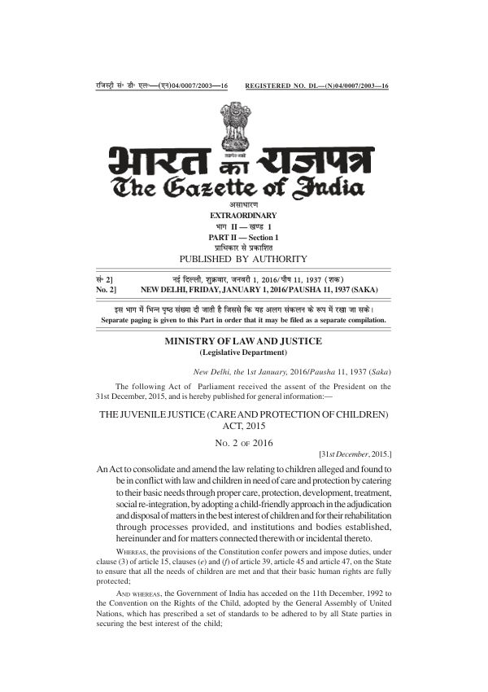

PDF · 46 pages · 324 KBGovernment of India · 2016
Juvenile Justice (Care and Protection of Children) Act, 2015
The JJ Act, 2015
The full text of the Act as published in the Gazette of India, with the notification that brought it into force on 15 January 2016. It is the main law for children who need care and protection.
Useful for: Anyone working with children in care who needs the law itself.
The original text. Read it together with the 2021 amendment.